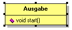

Die "Ausgabe"-Klasse |
|
|  | Wir erstellen also noch eine neue Klasse
mit dem Namen "Ausgabe" und definieren diese als "public". Sie besitzt
eine Methode "start". Auch diese ist "public" und startet
später unsere Ausgabe. Mehr braucht diese Klasse nicht. Ihre Mächtigkeit erhält sie erst in einem späteren Prozess, wenn wir die Ausgabe unseres Programmes hier einbauen. |